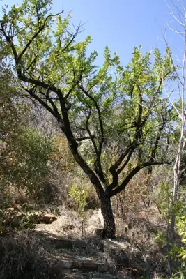

pranet · 出典付きの植物図鑑
Xithlangwa ☠
Gymnosporia heterophylla (Eckl. & Zeyh.) Loes. · Celastraceae

Gymnosporia heterophylla, the common spike-thorn, is a small, hardy, deciduous African tree up to 5 m tall, occurring in rocky places with a wide distribution from Ethiopia, the Sudan and the Congo, south to the Cape Province and west to Angola and Namibia, as well as the neighbouring islands of Madagascar and Saint Helena, with a closely related species from Mauritius.
出典: Wikipedia (en): Gymnosporia heterophylla · CC BY-SA 4.0
異名: Catha cymosa G.Don, Catha heterophylla (Eckl. & Zeyh.) C.Presl, Catha parvifolius (Eckl. & Zeyh.) C.Presl, Catha venenata (Eckl. & Zeyh.) C.Presl, Celastrus angularis Sond., Celastrus cymosus Eckl. & Zeyh., Celastrus glomeratus E.Mey., Celastrus glomeratus E.Mey. ex Sond., Celastrus heterophyllus Eckl. & Zeyh., Celastrus parvifolius Eckl. & Zeyh., Celastrus venenatus Eckl. & Zeyh., Elaeodendron glaucum Szyszył., Gymnosporia angularis (Sond.) Sim, Gymnosporia glauca Loes., Gymnosporia nyassica Gilli, Maytenus heterophylla (Eckl. & Zeyh.) N.Robson
同定や利用は自己責任でお願いします。この図鑑だけを根拠に野生の植物を食べないでください。
出典
- 学名: World Flora Online Plant List 2026-06 · CC0 1.0
- 名前: Wikipedia の記事名と Wikidata · CC0 1.0（Wikidata）。記事名は事実
- 説明: Wikipedia (en): Gymnosporia heterophylla · CC BY-SA 4.0
- 食用・毒性: World Checklist of Useful Plant Species (Diazgranados et al. 2020, RBG Kew) · CC BY 4.0
- 分布: World Checklist of Vascular Plants (WCVP), RBG Kew, version 2026-06-04 · CC BY 3.0
このページは pranet のデータから自動生成しています。コードは MIT、データは項目ごとのライセンス（説明）。